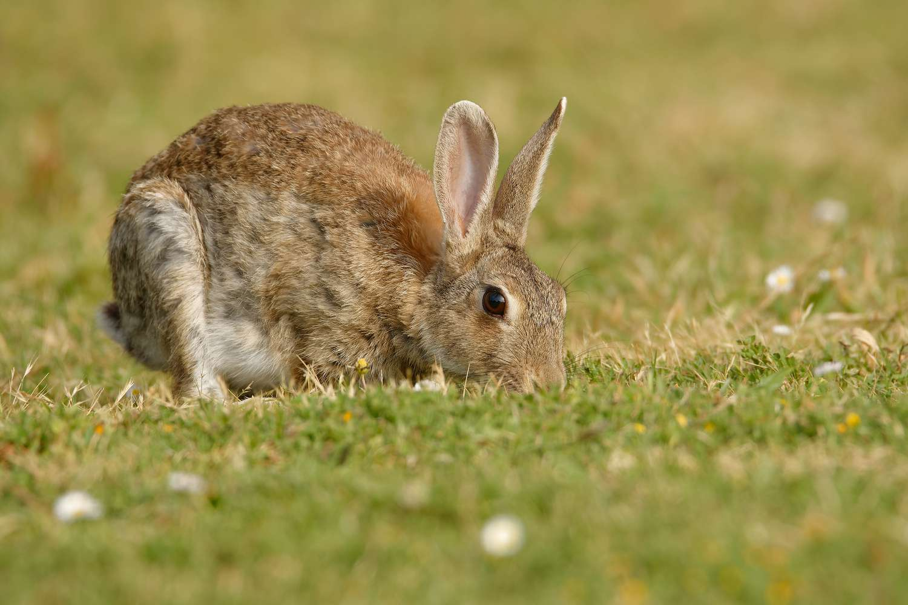

Introduction :
- Protected areas, designed as sanctuaries for biodiversity and environmental preservation, are integral components of global conservation efforts.
- In the face of escalating environmental challenges, the myriad issues affecting these protected areas have assumed unprecedented significance in today's world.
- These conservation bastions, ranging from national parks to marine reserves, grapple with multifaceted problems that transcend geographical boundaries.
- The importance of addressing these protected area issues lies not only in safeguarding the rich tapestry of life within their confines but also in recognizing their crucial role in maintaining ecological balance and mitigating the impacts of human activities on the planet.
- As we navigate the complexities of habitat destruction, illegal activities, invasive species, climate change, human-wildlife conflict, limited resources, and community engagement within protected areas, the urgency to find sustainable solutions becomes paramount.
- Preserving these natural havens is not merely an environmental obligation; it is an investment in the well-being of future generations and a testament to our commitment to coexist harmoniously with the diverse ecosystems that sustain life on Earth.
Habitat Destruction :
- Habitat destruction stands as an alarming consequence of expanding human activities within protected areas.
- The encroachment of urban development, agriculture, and infrastructure projects disrupts the delicate balance of ecosystems.
- This pervasive force leads to the transformation of once-thriving habitats into fragmented landscapes, challenging the resilience of flora and fauna.
- The ramifications extend beyond the immediate loss of biodiversity, influencing climate patterns and exacerbating environmental challenges globally.
- The conservation of protected areas necessitates a nuanced approach, advocating for sustainable land-use practices, reforestation initiatives, and comprehensive policies that prioritize the preservation of natural habitats.
- In the face of rapid urbanization and developmental pressures, the imperative is clear: protecting these vital ecosystems safeguards not only biodiversity but the very foundation of our planet's ecological health.
Statistics :
10 million
hectares lost annually globally.
50%
of the world's population resides in urban areas.
Primary
cause of species endangerment.
For More Information : https://worldfriendlyenvironment.medium.com
Illegal Logging and Poaching :
- Illegal logging and poaching emerge as insidious threats within the sanctuary of protected areas, challenging the very essence of conservation efforts.
- The illicit harvest of timber, driven by the lucrative timber trade, results in deforestation, habitat degradation, and the loss of critical ecosystem services.
- Simultaneously, the clandestine pursuit of wildlife for commercial gain, known as poaching, poses a severe threat to the delicate balance of these ecological sanctuaries.
- Iconic species such as elephants and rhinos face the grim consequences of demand for ivory, skins, and exotic pets.
- Addressing illegal activities within protected areas demands a multi-faceted approach, involving robust law enforcement, community engagement, and international collaboration to curtail the clandestine forces that undermine conservation endeavors.
Statistics :
15-30%
of global timber trade.
Over 1,000
rhinos killed annually for horns.
Multi-billion
dollar industry.
For More Information : https://harvardpolitics.com
Invasive Species :
- Invasive species, the infiltrators of protected areas, present a complex challenge to biodiversity and ecological stability.
- These non-native organisms, introduced by human activities, disrupt the intricate web of life within these ecological havens.
- Their impact extends beyond direct competition, often leading to cascading ecological consequences that ripple through entire ecosystems.
- Invasive plants may outcompete indigenous flora, altering habitat structure and nutrient cycling. Similarly, invasive animals can prey on or outcompete native fauna, driving population declines and altering food chains.
- The management of invasive species within protected areas requires a delicate balance between prevention, monitoring, and strategic intervention.
- Conservationists grapple with the complexities of preserving native ecosystems while addressing the pervasive threat posed by these insidious invaders.
Statistics :
Leading
cause of species extinctions.
$1.4 trillion
annual economic cost.
42%
of animal extinctions on islands.
For More Information : https://education.nationalgeographic.org
Climate Change :

- Climate change, a global phenomenon with far-reaching implications, casts its shadow upon the protected areas dedicated to conservation.
- The impacts are multifaceted, affecting the distribution of species, altering habitats, and threatening the very essence of these ecosystems.
- Rising temperatures, shifting precipitation patterns, and extreme weather events challenge the resilience and adaptive capacity of protected areas.
- Invasive plants may outcompete indigenous flora, altering habitat structure and nutrient cycling. Similarly, invasive animals can prey on or outcompete native fauna, driving population declines and altering food chains.
- Melting ice caps contribute to rising sea levels, encroaching upon coastal habitats, and altering entire landscapes. Phenological shifts, where plant and animal life cycle events are altered, add complexity to the delicate balance maintained within protected areas.
- Mitigating the effects of climate change on these conservation bastions requires adaptive management, global cooperation, and a commitment to reducing anthropogenic stressors on the environment.
Statistics :
1.2°C
temperature increase since the late 19th century.
8 inches
see level rise in the last century.
Increased
frequency and intensity of extreme weather events.
For More Information : https://www.asyousow.org
Human-Wildlife Conflict :

- The intricate dance between expanding human populations and wildlife within protected areas gives rise to the complex phenomenon of human-wildlife conflict.
- As communities encroach upon natural habitats, tensions over resources and space intensify, posing challenges for both conservation and human well-being.
- Crop damage by foraging wildlife, attacks on livestock by predators, and threats to human safety underscore the multifaceted nature of this conflict.
- Striking a balance between the needs of local communities and the imperative of preserving biodiversity requires nuanced strategies.
- From secure fencing to community education and habitat restoration, conservationists navigate the delicate terrain of mitigating human-wildlife conflict, fostering coexistence, and ensuring the sustainable future of protected areas.
Statistics :
Affects
livelihoods with losses reaching billions of dollars.
100s
of fatalities annually in regions with large predator populations.
Affects
tourism, agriculture, and local economies.
For More Information : https://www.raincoast.org
Limited Resources and Funding :
- The conservation landscape is riddled with challenges, and chief among them is the perpetual struggle against limited resources and funding.
- Protected areas, envisioned as bastions of biodiversity, often grapple with insufficient budgets that compromise their ability to fulfill their conservation mandates.
- Understaffed ranger teams, outdated equipment, and a lack of essential infrastructure amplify the vulnerability of these sanctuaries.
- The implications extend beyond mere operational constraints; they directly impact the effectiveness of protection measures, research endeavors, and community engagement initiatives.
- To overcome these challenges, a paradigm shift is necessary—one that involves sustainable funding models, increased public awareness, and collaborative efforts to secure the future of protected areas against the backdrop of mounting ecological threats.
Statistics :
Less than 5%
of environmental protection funds dedicated to biodiversity conservation.
Only 30%
of the world's protected areas have adequate management capacity.
Billions
of dollars required for effective protection and management.
For More Information : https://www.iucn.org
Lack of Community Involvement :
- The success of conservation efforts within protected areas is intricately linked to the level of community involvement and collaboration.
- However, the lack of active participation from local communities often proves to be a significant impediment to effective conservation strategies.
- Resistance to conservation measures, illegal activities, and conflicts stemming from a disconnect between conservation goals and local needs underscore the complexity of this challenge.
- Bridging this gap requires a multi-faceted approach that includes building trust, providing education, and integrating local knowledge into conservation initiatives.
- Fostering a sense of ownership and shared responsibility ensures that protected areas not only survive but thrive with the active support and participation of the communities they seek to protect.
- The empowerment of local communities becomes paramount, turning them into stewards of these invaluable conservation spaces and fostering a harmonious coexistence between humanity and the biodiversity it strives to preserve.
Statistics :
Positive
impacts reduce illegal activities and foster responsibility for natural resources.
Incorporating
indigenous knowledge proves effective in preserving biodiversity.
Empowered
communities increase the success rate of conservation initiatives.
For More Information : https://www.iucn.org